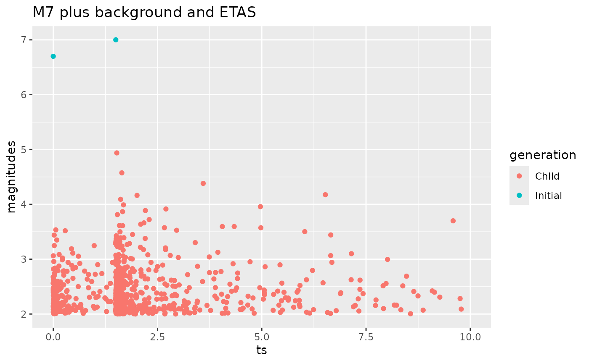
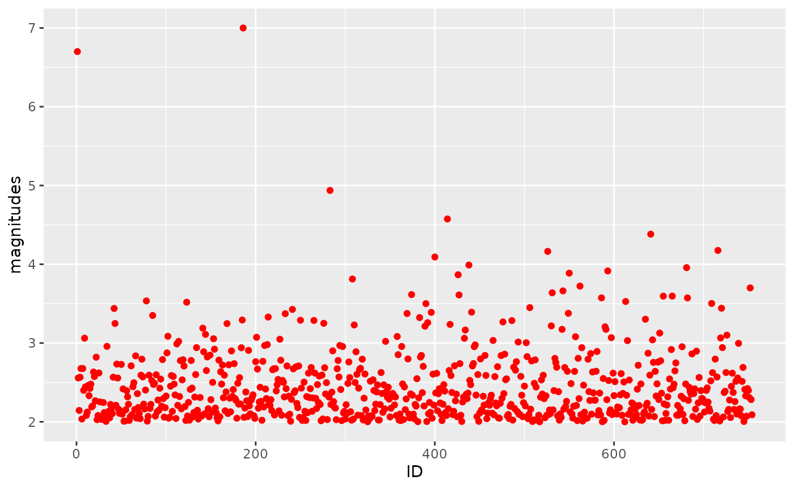

2a Temporal Model: Generating synthetic temporal ETAS catalogues
Source:vignettes/articles/generateSyntheticCatalogues.Rmd
generateSyntheticCatalogues.Rmd
library(ETAS.inlabru)
library(ggplot2)
library(dplyr)
library(magrittr)
# library(tidyquant)
# Increase/decrease num.cores if you have more/fewer cores on your computer.
# future::multisession works on both Windows, MacOS, and Linux
num.cores <- 2
future::plan(future::multisession, workers = num.cores)
INLA::inla.setOption(num.threads = num.cores)
# To deactivate parallelism, run
# future::plan(future::sequential)
# INLA::inla.setOption(num.threads = 1)Create catalogue
- define ETAS parameters
- define model domain
- specify a history
- generate ETAS sample
- plot the results
mu <- 1070. / 365
K <- 0.089
alpha <- 2.29
c <- 0.011
p <- 1.08
modelledDuration <- 10 # [days]
M0 <- 2
theta_etas <- data.frame(mu = mu, K = K, alpha = alpha, c = c, p = p)
Ht <- data.frame(ts = c(0., 1.5), magnitudes = c(6.7, 7.))
combined.M7.ETAS.cat <-
generate_temporal_ETAS_synthetic(
theta = theta_etas,
beta.p = log(10),
M0 = M0,
T1 = 0,
T2 = modelledDuration,
Ht = Ht,
format = "df"
)
combined.M7.ETAS.cat$ID <- seq_len(nrow(combined.M7.ETAS.cat))
ggplot(combined.M7.ETAS.cat) +
geom_point(aes(x = ts, y = magnitudes, color = factor(gen))) +
xlim(0, modelledDuration) +
ggtitle("M7 plus background and ETAS")
ggplot(combined.M7.ETAS.cat %>%
mutate(generation = if_else(gen == -1, "Initial", "Child"))) +
geom_point(aes(x = ts, y = magnitudes, color = generation)) +
xlim(0, modelledDuration) +
ggtitle("M7 plus background and ETAS")
ggplot() +
geom_point(data = combined.M7.ETAS.cat, aes(x = ID, y = magnitudes), color = "red") #+
# geom_ma(data = combined.M7.ETAS.cat, aes(x=ID, y=magnitudes), ma_fun = SMA, n = 10)